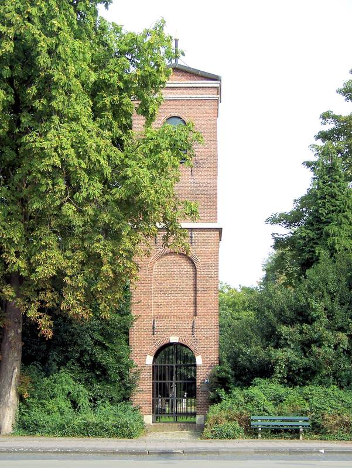

네덜란드 미덴흐로닝언 공공 열공급사, 호레흐트노르트 주택가 가입 설득 나서…올해 신청하면 연결·보일러 무료

시와 흐로닝언 수도회사 자회사가 공동 소유한 비영리 WarmteCompagnie, 마분지 공장 ESKA의 열 공급…집주인 절반 이상 동의해야 사업 성립, 2027년부터는 보조금 부족으로 무료 연결 어려워
네덜란드 흐로닝언주 미덴흐로닝언 시의 공공 열공급사 WarmteCompagnie가 11월 호헤잔트 호레흐트노르트(Gorecht-Noord) 지역의 자가 주택 소유자들을 집집이 찾아가 새 열공급망 가입을 안내한다. 올해 안에 신청하는 집은 열공급망 연결과 열 보일러를 무료로 받지만, 지금의 보조금으로는 더 감당하기 어려워 2027년 1월 1일부터는 무료 연결이 불가능해진다. 회사는 대상 집주인의 최소 50%가 동의해야 열공급망이 재정적으로 성립한다고 보고 있으며, 11월 18일 설명회를 열어 주민 질문에 답하고 집마다 에너지 요금을 따져 볼 수 있게 할 계획이다. WarmteCompagnie는 미덴흐로닝언 시와 흐로닝언 수도회사의 자회사 Waterbedrijf Groningen Duurzaam이 함께 소유하고 상업적 이윤을 목표로 하지 않는 회사로, 열은 수십 년째 호헤잔트에 자리한 마분지 공장 ESKA에서 받는다. 사업은 시가 2018년 6월 '천연가스 없는 동네' 시범사업으로 국고 보조를 신청하며 호레흐트노르트를 고른 데서 시작됐고, 2년 뒤 시와 주택협회들, ESKA, 수도회사 등이 협력 의향서에 서명했으며, 시가 2024년 설립 자금을 마련해 그해 12월 회사가 정식 출범했다. 열 요금 수준과 대상 가구 수는 공개되지 않았다.
시민에너지 관점
동네 집주인 절반이 동의해야 열공급망이 성립한다는 조건은, 지역 열 사업의 성패가 기술보다 주민의 신뢰에 달려 있음을 보여 준다. 공급망을 한 회사가 독점하면 요금이 오를 것이라는 걱정이 나올 수 있지만, 시와 공기업이 함께 소유하고 이윤을 목표로 하지 않는 구조라면 주민이 시의회를 통해 요금과 운영을 따져 물을 길이 열려 있다. 수십 년 동네에 자리한 공장의 열을 이웃집 난방으로 돌리는 일은 지역 안에서 에너지를 순환시키는 것이어서, 그 이익도 외부 사업자가 아니라 지역 공공과 주민이 쥐는 것이 맞다. 국내 산업단지와 공장 주변에서도 쓰이지 못하고 버려지는 열을 지자체·공기업·주민이 함께 소유하는 지역 열 사업으로 묶는 방안을 검토해야 한다.
출처: RTV Midden-Groningen 2026-11-05 기자 미표기 원문 보기
オランダ・ミデングローニンゲンの公営熱供給会社、ホレヒト・ノールトの住宅街で加入呼びかけ…今年申し込めば接続・ボイラー無料
市とフローニンゲン水道会社の子会社が共同所有する非営利のWarmteCompagnie、板紙工場ESKAの熱を供給…家主の半数以上の同意で事業成立、2027年からは補助金不足で無料接続は困難に
オランダ・フローニンゲン州ミデングローニンゲン市の公営熱供給会社WarmteCompagnieは11月、ホーヘザントのホレヒト・ノールト（Gorecht-Noord）地区の持ち家所有者を戸別に訪ね、新しい熱供給網への加入を案内する。今年中に申し込んだ家は熱供給網への接続と熱ボイラーを無料で受けられるが、現行の補助金ではまかないきれなくなるため、2027年1月1日以降は無料接続ができなくなる。同社は対象となる家主の少なくとも50%が同意しなければ熱供給網は財政的に成り立たないとみており、11月18日に説明会を開いて住民の質問に答え、各家庭のエネルギー料金を試算できるようにする計画だ。WarmteCompagnieはミデングローニンゲン市とフローニンゲン水道会社の子会社Waterbedrijf Groningen Duurzaamが共同で所有し、商業的な利益を目的としない会社で、熱は数十年前からホーヘザントにある板紙工場ESKAから受け取る。事業は市が2018年6月に「天然ガスのない地区」のモデル事業として国の補助を申請し、ホレヒト・ノールトを選んだことに始まり、2年後に市と住宅協会、ESKA、水道会社などが協力の意向書に署名し、市が2024年に設立資金を用意して同年12月に会社が正式に発足した。熱料金の水準と対象世帯数は公表されていない。
市民エネルギーの視点
地区の家主の半数が同意しなければ熱供給網が成り立たないという条件は、地域熱事業の成否が技術よりも住民の信頼にかかっていることを示している。一つの会社が供給網を独占すれば料金が上がるという心配も出るだろうが、市と公企業が共同で所有し利益を目的としない仕組みであれば、住民が市議会を通じて料金と運営を問いただす道が開かれている。数十年来地域にある工場の熱を隣家の暖房に回すことは地域の中でエネルギーを循環させることであり、その利益も外部の事業者ではなく地域の公共と住民が握るのが筋だ。韓国でも産業団地や工場の周辺で使われずに捨てられている熱を、自治体・公企業・住民が共同で所有する地域熱事業にまとめる方策を検討すべきだ。
出典: RTV Midden-Groningen（RTVミデングローニンゲン） 2026-11-05 記者名なし 原文を読む
荷兰中格罗宁根公营供热公司走访霍雷赫特北区住户动员入网…今年申请可免费接入并获赠锅炉
由市政府与格罗宁根自来水公司子公司共同持有的非营利WarmteCompagnie，热源来自纸板厂ESKA…须有半数以上房主同意项目才能成立，2027年起因补贴不足难以免费接入
荷兰格罗宁根省中格罗宁根市的公营供热公司WarmteCompagnie将于11月逐户走访霍赫赞德霍雷赫特北区（Gorecht-Noord）的自有住房业主，介绍如何接入新的供热管网。今年内申请的住户可免费接入供热管网并获得一台热力锅炉，但由于现有补贴难以继续覆盖，自2027年1月1日起将无法免费接入。公司认为，至少50%的相关房主同意接入，供热管网在财务上才可行；公司还计划于11月18日举办说明会，解答居民疑问，并为各户测算能源费用。WarmteCompagnie由中格罗宁根市与格罗宁根自来水公司的子公司Waterbedrijf Groningen Duurzaam共同持有，不以商业盈利为目的，热源来自数十年来一直设在霍赫赞德的纸板厂ESKA。该项目始于2018年6月，当时市政府以“无天然气街区”试点项目向中央政府申请补贴并选定了霍雷赫特北区；两年后，市政府与多家住房协会、ESKA、自来水公司等签署了合作意向书；市政府于2024年拨出设立资金，公司于同年12月正式成立。供热价格水平和涉及户数均未公布。
市民能源视角
须有街区半数房主同意供热管网才能成立，这一条件表明，地方供热项目的成败与其说取决于技术，不如说取决于居民的信任。有人或许担心一家公司独占管网会推高价格，但如果是由市政府和公营企业共同持有、不以盈利为目的的结构，居民就能通过市议会追问价格与运营。把扎根当地数十年的工厂热能用于邻里取暖，是让能源在本地循环，其收益也理应由地方公共部门和居民而非外部企业掌握。韩国也应研究把产业园区和工厂周边被白白浪费的热能，整合为由地方政府、公营企业和居民共同持有的地方供热项目。
来源: 中格罗宁根广播电视（RTV Midden-Groningen） 2026-11-05 未署名 查看原文
Midden-Groningen's public heat company goes door to door in Gorecht-Noord; free connection and boiler for homes that sign up this year
Non-profit WarmteCompagnie, jointly owned by the municipality and a subsidiary of the Groningen water company, will use heat from the ESKA cardboard mill; at least half of homeowners must agree, and free connections end in 2027 as subsidies fall short
WarmteCompagnie, the public heat company of the Dutch municipality of Midden-Groningen in Groningen province, will visit owner-occupied homes in the Gorecht-Noord neighbourhood of Hoogezand door to door in November to explain how to connect to a new heat network. Homes that sign up this year will get the connection and a heat boiler free of charge, but from January 1, 2027 that will no longer be possible, partly because current subsidies will no longer be sufficient. The company says at least 50% of the homeowners concerned must agree for the network to be financially viable, and it will hold an information evening on November 18 where residents can ask questions and have their energy bills recalculated. WarmteCompagnie is jointly owned by the municipality and Waterbedrijf Groningen Duurzaam, a subsidiary of the Groningen water company, and has no commercial profit motive; its heat comes from the ESKA cardboard mill, which has been based in Hoogezand for decades. The project dates back to June 2018, when the municipal executive applied for national subsidy for a natural-gas-free neighbourhood pilot and chose Gorecht-Noord; two years later the municipality, housing associations, ESKA, the water company and others signed a declaration of intent, and after the municipality set aside funds in 2024, the company was formally founded that December. Heat tariffs and the number of homes involved have not been disclosed.
Citizen Energy View
The rule that half of a neighbourhood's homeowners must sign up before the network can go ahead shows that local heat projects stand or fall on residents' trust more than on technology. Some will worry that a single company holding the network will push up prices, but when it is jointly owned by the municipality and a public utility and has no profit motive, residents have a route through the council to question tariffs and operations. Turning the heat of a mill that has stood in the town for decades into heating for the homes next door keeps energy circulating locally, so the benefits should rest with local public bodies and residents rather than outside companies. Korea, too, should look at bundling heat that is now wasted around industrial complexes and factories into local heat projects jointly owned by local governments, public utilities and residents.
Source: RTV Midden-Groningen 2026-11-05 No byline Read the original